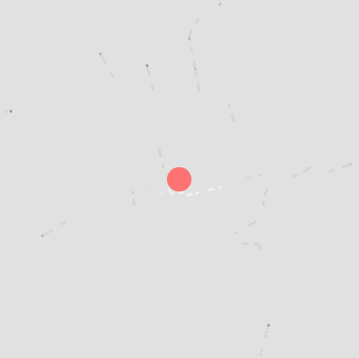
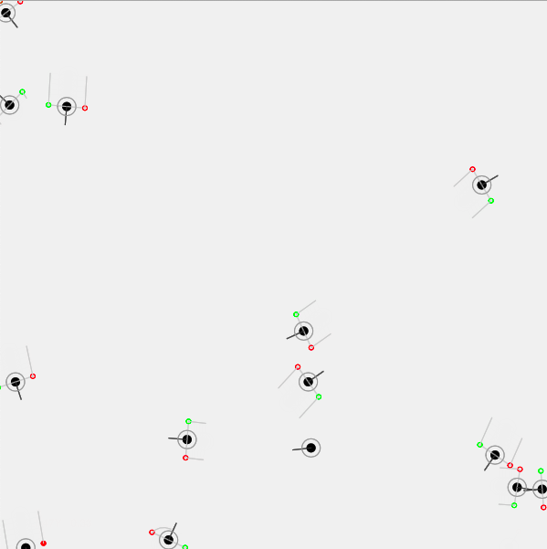

Sky Globe
When I look up at the sky, I might see an airplane or two, but apart from a few rare sightings, the sky seems relatively empty. However, a quick glance at a (pre-COVID) flight schedule says anything but. Our skies are quite literally filled with airplanes, especially in a city with an airport. However, this data is quite difficult to visualise, let alone see even. Taking data from opensky-network.org ↗, I created a Sky Globe which allows you to see the airplanes in the skies above your location.
See what's above you
Sky Globe takes your location, and visualises the aircraft flying above you in real time. It shows all aircraft within an area of 295km around your location. Airplanes do fly awfully quickly, and a wider catchment area allows us to see aircraft that might be passing on the periphery of your location. The sketch also shows the visualisation of the altitude and traces the path of the aircraft as it passes through the sky. The position of the aircraft updates every 5.5 seconds. Each aircraft is marked with it's callsign and the country of origin. The information on display has been kept to a minimum to allows viewers to have a clear and unimpeded view of the visualisation.
The sketch uses the opensky-network API to pull in aircraft coordinates and metadata. My intent with this sketch was to visualise and unveil the often hidden activities in the skies above us. Not all aircraft flying are commercial, cargo, private, or military. Some aircraft have hidden agendas, often hidden behind false callsigns. This article ↗ elucidates one such incident. Websites such as FlightAware and FlightRadar24 do show the aircraft in our vicinity, but it's difficult to visualise the data with a 2D visual. The source of the data is not clear with these commercial websites. The data on opensky-network is crowd-sourced, and hence aircraft cannot be hidden unless they switch off their ADS-B transponders (highly unlikely as they won't show up on ATC radar, which has major safety implications).

Initial prototype
Before creating the 3D version, I initially tried using a standard 2D version of the sketch which would reveal aircraft information on mouse hover.

Resolving 2D vector math
However, this variation wasn't very useful in displaying information as it didn't illustrate the position of the aircraft in relation to the viewer. The 3D view was important in conveying relative position of the aircraft in the sky.
Development #
Developing this was far more complicated than I initially imagined. There were a lot of moving parts, although mostly to do with the visualisation rather than navigating the API itself. One of the biggest challenges was creating the trails in the sky, as well has having background refresh. However, this meant that I had to develop a system to identify individual aircraft and update their locations without creating a new array of aircraft everytime.

Aircraft over NYC
Having figured out the data structures of the aircraft lists, I had to figure out how to create the trails for each aircraft, which would extend from the coordinates. I used a slightly complicated solution of creating two PVectors which would extend from the 3D coordinates to create each edge of the trail. This was needed as it would adapt to the rotation of the aircraft (another maths challenge to solve!) as it turned. Along the journey, I even made a case for, and advocated a contribution ↗ to p5.js!